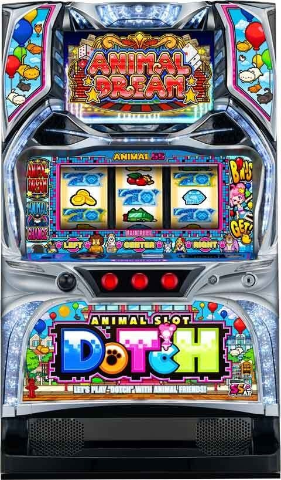
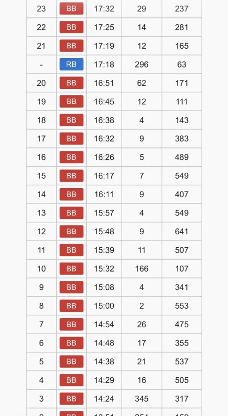
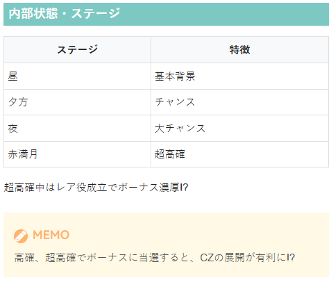

アニマルスロットドッチ


狙い目
【リセット狙い】
350Gから
【ゲーム数天井狙い】
BIG後 830Gから
REG後 320Gから
【上位ST後狙い】
狙い目 上位STで終了している台をST当選まで。
・上位STで終了した場合は次回STも上位STスタート濃厚。
・上位STに突入していても下位STに落ちて終わっている場合は狙い目にならない。
・上位STでのボーナス当選はすべて異色揃いとなるため、獲得枚数平均500枚のボーナスが続いている。目安は400枚以上。少ないと350枚前後の事もある。
・下位STで異色揃いはかなりレア。2回連続で400枚超えている様だと上位STに突入濃厚？1回でも上位STだった可能性高い。
・上位STの見抜き方は、「その他」→「履歴」を参照
・上位ST突入契機は不明
【ジャングルボーナス（ST？）間狙い】
ジャングルボーナス（ST？）間 1500Gからジャングルボーナス当選まで
※ST間なのかジャングルボーナス間は不明だが2500G前後に天井が存在する模様。
※天井発動条件は不明。2500Gハマり後の初当たりで天井発動？
※初当たりビッグボーナスとジャングルボーナスはどちらもBBで信号上がるため、50G以内のBB当選が無ければジャングルボーナス非当選と判断がつきそう。
※現状はジャングルボーナス間で良さそう。
【示唆関連の押し引きについて】
不明
【有利区間関連狙い】
不明
やめ時
ボーナス終了後、ST終了後は高確へ移行するため、昼か夕方のステージに落ちるまで。または10Gちょいくらい回してやめ？
夜、赤満月ステージの場合はステージが落ちるまで。
その他
履歴
①上位STで終了した履歴
14:29のBB4回目から15:08のBB9回目まで上位ST。最後の獲得枚数が341枚と少し足りないが上位STで終了したと思われ、15:39のBB11回目のSTが上位STスタートしていると思われる。
②上位STから下位STに移行して終了した履歴
16:32のBB17回目までは上位ST。16:38のBB18回目は下位STに移行したと思われる。このケースだと下位STで終了しているため、次回ST時に上位STスタートとはならない。

内部状態・ステージ

参考元
かめとうさぎのパチスロブログ
基本情報
- メーカー: 北電子
- 機械割: 97.6% 〜 108.2%
- 導入開始日: 2026年04月20日（月）
- ゲーム性概要: ・初当り確率1/169.4（設定1）～1/131.9（設定6）と遊びやすいSTタイプのAT機 ・通常時はボーナス契機のCZからSTを目指すゲーム性 ・STループ率は初回が約40%、2回目以降が約82% ・期待枚数約3000枚のMAXアニマルループ搭載 ※期待枚数はMAXアニマルループ開始からSTが終了するまでの期待枚数


打ち方
打ち方・小役
打ち方（小役狙い）
［最初に狙う絵柄］
［スイカ停止時］ スイカが停止した場合は中リールにスイカを目押し（BAR目安でOK）。 その他の停止形は中＆右リールフリー打ちで問題ない。
［中1stナビ］ 通常時の中1stナビは状況に応じて、ナビ非発生→リーチ目役停止になる。
変則押しはNG
基本的にナビ非発生時は左1stでの消化を推奨だ。
出目ごとの成立役
［状況によって打ち分けると面白い］ ミッション中なら赤7狙い、超高確中は青7のサンド目でレア役を判別…というように、状況や演出に応じて打ち分けると、より面白くなる。
［赤7狙い時］ ST中のベルミッション中に1確目を楽しめる打ち方だ。
●赤7枠上停止時 共通ベルorスイカorリーチ目
●赤7上段止時 共通ベルorスイカorリーチ目
●赤7中段止時 1枚役orリプレイorリーチ目
●赤7下段停止時 チェリーorリーチ目
●中段チェリー停止時 リーチ目濃厚！
［青7サンド目狙い時］ 超高確（赤満月）中に1確を楽しめる手順が青7サンド目狙い。
●青7サンド目停止時 リーチ目濃厚！
●青7中段止時 1枚役orリプレイor共通ベルorリーチ目
●青7下段停止時 チェリーorスイカorリーチ目 超高確中はレア役もボーナス濃厚なので、これも1確目だ。
●スイカ上段停止時 基本的に青7サンド目をしっかりと目押ししていれば停止しない出目。 上側の青7を中段に押して停止した場合はリプレイorリーチ目になる。
●スイカ中段停止時 4コマスベリならリーチ目、3コマスベリなら共通ベルorリーチ目となる。
※1枚役は見た目上ハズレ目が停止（ベルこぼし含む）
解析情報通常時
小役関連
小役確率
| 役 | 確率 |
|---|---|
| リプレイ | 1/8.91 |
| 択ベル | 1/1.72 |
| 共通ベル | 1/20.76 |
| １枚役 | 1/5.37 |
| リーチ目 | 約1/250 |
チェリー・スイカ確率
| 設定 | チェリー | スイカ |
|---|---|---|
| 1 | 1/37.69 | 1/54.12 |
| 2 | 1/36.78 | 1/53.67 |
| 3 | 1/35.89 | 1/53.15 |
| 4 | 1/34.99 | 1/52.72 |
| 5 | 1/34.10 | 1/52.26 |
| 6 | 1/33.22 | 1/51.73 |
内部状態関連
高確・超高確概要
通常・高確・超高確の3種類があり、超高確中はレア役成立＝ボーナスになる。 状態の昇格契機はレア役と押し順ナビ時。 高確はあくまで超高確へ移行するためのステップで、通常滞在中とボーナス当選率は同じ。高確中にのみ超高確移行を抽選する。 夕方や夜ステージは高確示唆、夜＋赤満月のステージが超高確示唆だ。
高確・超高確 性能
| 移行契機 | チェリー・スイカ・中1stナビの一部、 100G消化ごとの抽選、ボーナスorST終了後 |
|---|---|
| 滞在中の恩恵 | 高確中のみ超高確への移行を抽選、 超高確中のレア役はボーナス濃厚、 高確以上のBIG当選時は択当てレベル3以上濃厚 |
| 備考 | REG連続・ボーナス間ハマリ・CZ失敗等の 嫌なことが発生すると超高確移行率がアップ |
高確・超高確移行率
| 役 | 高確移行 | 高確→超高確移行 |
|---|---|---|
| チェリー・スイカ | 12.5% | 弱 |
| 中1stナビ | 12.5% | 中 |
| 100G消化ごと | 約25% | 一 |
| ボーナス・ST終了後 | 100% | 一 |
［赤満月状態移行レベル］ 赤満月（超高確）移行確率は6段階のレベルで管理。設定変更後はレベル3以上からスタートするため、超高確率移行のチャンスになる。
超高確DATA
| トータル移行確率 | 約1/704 |
|---|---|
| 超高確中のボーナス確率 | 約1/1６ |
| 最低保障ゲーム数 | 13G |
| 平均継続ゲーム数 | 約16G |
保障ゲーム数を消化すると赤満月は終了する。
赤満月移行確率
| レベル | 確率 |
|---|---|
| レベル１ | 1/2522 |
| レベル２ | 1/1880 |
| レベル３ | 1/942 |
| レベル４ | 1/760 |
| レベル５ | 1/540 |
| レベル６ | 1/472 |
赤満月移行確率は6段階のレベルで管理されていて、高レベルほど赤満月に移行しやすい（高確中の超高確移行が優遇）。
赤満月レベルの昇格契機
通常時500Gハマリ時 ［昇格濃厚］
通常時600G・700G・800G・900Gハマリ時
REG後（ST非当選時）
REG2連続以上 ［昇格濃厚］ ※3連目以降も昇格濃厚
CZ終了後（押し順の正解数が少ないほど昇格しやすい） ※押し順正解数0回なら約50%で昇格
高確中の中1stナビ時に赤満月移行を抽選
レベルはジャングルボーナス当選（ST中のボーナス当選）でリセットされる。
レベルごとの赤満月状態移行率（高確中のみ）
| レベル | 移行率 |
|---|---|
| 1 | 4.7% |
| 2 | 6.3% |
| 3 | 12.5% |
| 4 | 15.6% |
| 5 | 21.9% |
| 6 | 25.0% |
小役契機の当選率
ボーナス当選率
| 役 | 超高確以外 | 超高確中 |
|---|---|---|
| チェリー・スイカ | 2.3% | ボーナス濃厚 |
| リーチ目 | ボーナス濃厚 | ボーナス濃厚 |
ボーナス本前兆中にリーチ目を引くとBIG濃厚、元々内部的にBIGが当選していた時は択当てレベルの加算抽選がおこなわれる。
解析情報ボーナス時
初当りボーナス
BIG概要
BIGはセット管理型のボーナスで、消化中はレア役や技術介入役などでポイントを貯めていき、10pt到達ごとにレベルが上昇。 最終的なレベルに応じてCZの択当てチケットを獲得できる（最低でも銅チケット獲得）。 また、BIGのセットは開始時に決まっていて、最終ゲームの継続ジャッジで継続・非継続を告知。この最終ゲームでレア役を引けば50%で1セットが上乗せされる。
BIG 性能
| 当選契機 | 通常時の抽選 |
|---|---|
| 純増 | 約2.5枚/G |
| 継続ゲーム数 | 50枚獲得/セット×2～6セット |
| 平均獲得 | 約140枚 |
| 消化中の抽選 | ポイント獲得抽選 ※10ptごとに択当てレベルアップ抽選 |
| その他 | 継続ジャッジ（1G間）で レア役や中1stナビを引けば約50%でセット上乗せ |
| 備考① | 終了時にレベルに応じたチケットを獲得してCZ突入 |
| 備考② | 高確中に当選したBIGは択当てレベル3以上スタート |
［技術介入役］ 逆押しで左リールに青7のサンド目を目押し。成功すればポイントが加算される。 アバウトな目押しでOKなので難易度は低めだ。
［択当てレベル］ 画面左にポイントのメーターがある。
［継続ジャッジ］
継続ジャッジ中の継続セット上乗せ当選率
| 役 | 当選率 |
|---|---|
| チェリー・スイカ・中1stナビ | 50.0% |
初回は必ず継続。2回目移行はBIG当選時の振り分けで決定する。レア役を引けば自力継続orセットストックに期待できる。
［択当てチケット獲得］ リザルト画面でレベルに応じた択当てチケットを獲得する。
択当てレベルごとの獲得択当てチケット
| 択当てレベル | 獲得択当てチケット |
|---|---|
| 1 | 銅×1 |
| 2 | 銅×2 |
| 3 | 銅×3 |
| 4 | 銅×2 ＋ 銀×1 |
| 5 | 銅×1 ＋ 銀×2 |
| 6 | 銀×3 |
| 7 | 銀×2 ＋ 金×1 |
| 8 | 銀×1 ＋ 金×2 |
| 9 | 金×3 |
レベルは1から始まるので、レベルを上げられなくても銅チケッとは獲得できる（＝CZ突入濃厚）。金チケットはフルナビになるのでST当選濃厚だ。
REG概要
CZ当選率（択当てチケット獲得率）は低めだが、消化中に獲得していた場合は最終画面で告知。 消化中はキャラ消化のパターンで設定が示唆される。
REG 性能
| 当選契機 | 通常時の抽選 |
|---|---|
| 純増 | 約5.5枚/G |
| 継続ゲーム数 | ベルナビ6回発生まで |
| 平均獲得 | 約56枚 |
| 消化中の抽選 | 当選時と消化中の成立役に応じて 択当てチケット獲得抽選 |
| 備考 | 択当てチケットを獲得していれば終了後にCZ突入 |
［終了画面でのチケット獲得］ PUSHボタンが表示されればチケットを獲得できる。
セット継続時の獲得ポイント振り分け
| 加算 | 1セット目 | 2セット目以降 |
|---|---|---|
| ＋1pt | 一 | 50.0% |
| ＋2pt | 一 | 25.0% |
| ＋3pt | 一 | 10.2% |
| ＋4pt | 一 | 5.1% |
| ＋5pt | 一 | 3.5% |
| ＋6pt | 一 | 2.3% |
| ＋7pt | 一 | 1.6% |
| ＋8pt | 一 | 1.2% |
| ＋9pt | 一 | 0.8% |
| ＋10pt | 100% | 0.4% |
初回セットは10ptからスタート。2セット目開始時は抽選でポイントが上乗せされる。
成立役ごとの獲得ポイント振り分け
| 加算 | 技術介入 | 共通ベル | チェリー | スイカ | １枚役 |
|---|---|---|---|---|---|
| ＋1pt | 79.7% | 20.3% | 一 | 一 | 3.9% |
| ＋2pt | 10.2% | 3.1% | 39.8% | 75.0% | 1.2% |
| ＋3pt | 6.3% | 1.2% | 39.8% | 7.4% | 一 |
| ＋4pt | 2.7% | 0.4% | 14.8% | 7.4% | 一 |
| ＋5pt | 0.8% | 0.4% | 5.1% | 5.1% | 一 |
| ＋10pt | 0.4% | 0.4% | 0.4% | 5.1% | 一 |
アニマルチャンス（CZ）
CZ概要
押し順ベル成立時に択当てチケットの種類に応じたナビが発生。正解すればSTゲーム数を獲得できる。
アニマルチャンス（CZ）性能
| 突入契機 | ボーナス中の択当てチケット獲得後 |
|---|---|
| 継続ゲーム数 | 択当てチケット個数分の押し順ベル発生まで |
| 消化中の抽選 | レア役時はチケットの獲得・昇格抽選、 択当て成功でST濃厚 |
| 備考 | 択当て成功ごとにST10Gを獲得 |
択当てチケットの種類
| チケット種別 | 択数 |
|---|---|
| 銅 | 4択 |
| 銀 | 2択 |
| 金 | 全ナビ（成功濃厚） |
［択当てチケット表示］ レア役時は、チケットの獲得や昇格を抽選する。
［押し順当て］
レア役時のチケット抽選
押し順当て正解数＋チケットの残数が３に満たない場合はチケット獲得を、それ以外の場合はチケット種別の昇格を抽選する。
CZ中のチケット当選率（昇格率）
| 役 | 当選率 |
|---|---|
| チェリー | 50.0% |
| スイカ | 25.0% |
| 中1stナビ | 10.2% |
開始画面でリーチ目を引いた場合は金チケット3枚＋MAXアニマループが濃厚になる。
アニマルドリーム（ST）
ST概要
初回はCZで獲得したゲーム数分、ボーナス当選後（STの2セット目以降）は30G固定。 消化中は全役でボーナスを抽選する。ST中のボーナスは約100枚or200枚or300枚のジャングルボーナスになるところもポイントだ。
アニマルドリーム（ST）性能
| 突入契機 | CZ成功 |
|---|---|
| 継続ゲーム数 | 初回はCZの択当て回数で決定（10G～30G）、 2セット目以降は30G |
| ループ率 | ST初回セットの平均突破率は約40%、 2セット目以降は約82%でループ |
| 消化中の抽選 | ボーナス、DOTCH、ミッションを抽選 |
| 備考① | ボーナス当選で次セットへ継続 |
| 備考② | 継続時の約15%で赤満月へ移行 |
ST中のリーチ目確率
| 役 | 確率 |
|---|---|
| リーチ目 | 約1/55 |
ミッション・DOTCH確率
| 種別 | 確率 |
|---|---|
| ミッション | 約1/70 |
| DOTCH | 約1/90 |
ST中の告知モードはコチラ
［ミッション］ ３G以内に指定された小役を引ければボーナス濃厚！
［DOTCH］ 「どっちどっちどっち〜？」という印象的なボイスとともに発生するガチの2択当て。成功すればボーナス濃厚になる。
［赤満月］ 赤満月中は通常時と同じく、レア役＝ボーナス濃厚。セット継続時の約15%で突入かつ、ボーナスを引いた場合は約80%で赤満月が次セットに継続する。
ちなみに、赤満月のSTをスルーした場合は次回のSTが必ず赤満月になる。
MAXアニマループ
ST突入画面が乱れるとループ性能が大幅にアップして赤満月へ移行する。 期待獲得枚数は約3000枚。 また、MAXアニマループ状態のSTをスルーした場合、次回のSTが必ずMAXアニマループになるため、次回STまで続行するのをオススメだ。
※期待枚数はMAXアニマループ開始からSTが終了するまでの期待枚数
ボーナス当選率
| 役 | 当選率 |
|---|---|
| リプレイ | 2.0% |
| 共通ベル | 2.0% |
| チェリー | 7.9% |
| スイカ | 7.9% |
| リーチ目 | 100% |
ボーナス本前兆中にリーチ目を引くとダブル揃いor異色揃いのボーナス濃厚、内部的にダブル揃いが当選していた時はMAXアニマループを抽選する。
ミッション
ミッションの種類は3種類で、発生時の比率は1：1：1。 いずれも3G以内に対応役を引けばボーナスとなる。
ミッション種別
| 種別 | 特徴 |
|---|---|
| ベルミッション | 3G以内にベルorレア役成立でボーナス濃厚 |
| リプレイミッション | 3G以内にリプレイorレア役成立でボーナス濃厚 |
| ベル＆リプレイ ミッション | 3G以内にベルorリプレイorレア役成立で ボーナス濃厚 |
ミッション中にリーチ目を引いた場合は、ダブル揃いor異色揃いのボーナス濃厚だ。
ジャングルボーナス
ジャングルボーナス概要
ST中のボーナスで、青7が揃ったラインで初期枚数が変化。消化中は成立役に応じてポイントを貯めていき、20pt到達でベルナビが上乗せされる。
ジャングルボーナス 性能
| 当選契機 | ST中の抽選 |
|---|---|
| 純増 | 約5.5枚/G |
| 継続ゲーム数 | 100or200or300枚獲得＋αまで |
| 平均獲得 | 約130or260or500枚 |
| 消化中の抽選 | ポイント獲得抽選 ※20ptごとにベルナビを獲得 |
ボーナス入賞図柄
| 図柄 | 初期枚数 |
|---|---|
| 青7シングルライン | 100枚 |
| 青7ダブルライン | 200枚 |
| 青7・赤7・青7 | 300枚 |
初期枚数が多いほどベルナビを上乗せしやすいので獲得枚数の伸び幅も多くなる。
［ポイント］ 液晶下部のチップの数＝ポイントだ。1枚役でも獲得できる可能性がある。
［技術介入役］ BIG中と同じく逆押しで左リールに青7のサンド目を目押し（アバウトでOK）。成功すればポイントが加算される。
［ナビ上乗せ］ 上乗せされたナビは一旦ストックされ、ボーナスの規定枚数消化後に使用する。
成立役ごとの獲得ポイント振り分け
| 加算 | 技術介入 | 共通ベル | チェリー | スイカ | １枚役 |
|---|---|---|---|---|---|
| ＋1pt | 23.7% | 一 | 一 | 一 | 41.2% |
| ＋2pt | 27.1% | 51.5% | 一 | 一 | 25.3% |
| ＋3pt | 24.8% | 32.2% | 一 | 一 | 19.4% |
| ＋4pt | 一 | 一 | 一 | 一 | 一 |
| ＋5pt | 19.8% | 9.9% | 22.3% | 35.6% | 9.7% |
| ＋6pt | 一 | 一 | 一 | 一 | 一 |
| ＋8pt | 一 | 一 | 一 | 一 | 一 |
| ＋10pt | 3.5% | 4.9% | 20.8% | 一 | 3.7% |
| ＋20pt | 1.1% | 1.5% | 56.8% | 64.4% | 0.7% |
20pt到達時の上乗せナビ振り分け
| ナビ | 100枚ボーナス | 200枚ボーナス | 300枚ボーナス |
|---|---|---|---|
| 1回 | 76.6% | 66.4% | 25.0% |
| 2回 | 20.3% | 27.3% | 25.0% |
| 3回 | 2.0% | 5.1% | 25.0% |
| 5回 | 0.8% | 0.8% | 19.9% |
| 10回 | 0.4% | 0.4% | 5.1% |
ボーナスの種類で20pt到達時の獲得ナビ数の振り分けが変化。 枚数が多いボーナスほど複数回数ナビを獲得しやすい。
演出情報
通常時
ステージの示唆
| ステージ | 示唆 |
|---|---|
| 昼 | 高確示唆［低］ |
| 夕 | 高確示唆［中］ |
| 夜 | 高確示唆［高］ |
| 赤満月 | 超高確示唆 |
［昼］
［夕］
［夜］
［赤満月］
赤満月移行状態レベル示唆
モノクロウィンドウのシロクマセリフで赤満月移行状態レベルを示唆。 ST終了後100G以内は示唆セリフの出現率がアップする。
セリフごとの赤満月移行状態レベル示唆
| セリフ | 示唆 |
|---|---|
| ちょっと…筆が弱くなってきた… | 高レベル示唆 |
| 中々絵がうれないな… | レベル3以上濃厚 |
| 強い男に…なりたいな… | レベル5以上濃厚 |
通常時・ST中共通
演出法則
［天候変化演出］ ●雨
●雪
●雷
天候演出の対応役
| パターン | 対応役 |
|---|---|
| 雨 | ハズレorリプレイorベル |
| 雪 | チェリー |
| 雷 | スイカ |
対応役の法則が崩れれば大チャンス。
［デカマジロ演出］ 第3停止ボタンをねじって鼻提灯が割れればBIG濃厚だ。
デカマジロ演出の期待度
| パターン | ボーナス期待度 |
|---|---|
| 発生時点 | 約55% |
［デカキリン演出］ こちらも第3停止ボタンをねじって、通過したキリンが戻ってくればBIG濃厚になる。
デカキリン演出の期待度
| パターン | ボーナス期待度 |
|---|---|
| 発生時点 | 約88% |
［反転演出］ 反転すればチャンス!?
［車演出］ 自動車の色で成立役を示唆。白自動車通過で大チャンス!?
［管理人ルーレット演出］ ●弱パターン
●強パターン どちらもNEXTが停止すれば次ゲームに継続してチャンスアップ。
［正面玄関演出］ ●弱パターン
●強パターン 登場キャラで成立役を示唆。入口の左に管理人がいれば強パターンだ。
［バス停演出］ ●弱パターン
●強パターン 強パターンはレア役示唆で、ハズレやリプレイ、ベルならボーナスの大チャンスになる。 ちなみに、ST中はバスでなくリムジンが登場。リムジンの色は黒が弱、白が強パターン。
［ベランダ演出］ ●弱パターン
●強パターン 選ばれたキャラで対応役を示唆していて、小鳥がいれば強パターン。ST中はポスター演出に変化する。
ベランダ演出の法則
弱パターン→第1停止でのライオン告知は大チャンス
弱パターン→第3停止でのウサギ告知は大チャンス
強パターン→左のシロクマ告知なら大チャンス
強パターン→左のネコ告知なら大チャンス
［木の穴演出］ ●弱パターン
●強パターン リンゴがあれば強パターン。強パターンでリスが隠れると大チャンス！
［空通過演出］ ●弱パターン
●強パターン 太陽が出ていれば強パターン。
●スズメ
●鷲
●気球 第2停止時に気球が通過すれば大チャンス！
［監視カメラ演出］ 表示されたパーセンテージでボーナス期待度が示唆される。
［自由の女神演出］ ST中専用演出。青告知が発生すれば大チャンスだ。
［アニマルルーレット演出］ ●弱パターン
●強パターン 卵にヒビが入っていれば強パターン。
●濃厚パターン 金の卵ならボーナス濃厚になる。
登場キャラ
登場キャラごとの対応役
通常時・ST中ともに、動物キャラで対応役が変化する。
キャラごとの対応役
| キャラ | 対応役 |
|---|---|
| シロクマ | ハズレ |
| ネコ | リプレイ |
| ペンギン | ベル |
| ライオン | スイカ |
| ウサギ | チェリー |
| ブルドッグ | チャンス |
バウンドストップ
バウンドストップのタイミング別成立役
| タイミング | 成立役 |
|---|---|
| 左リール | チェリーorリーチ目役 |
| 中リール | スイカorリーチ目役 |
| 右リール | チェリーorスイカorリーチ目役 |
発生タイミング別のボーナス期待度
| タイミング | 通常時 | ST中 |
|---|---|---|
| 左リール | 約55% | 約66% |
| 中リール | 約77% | 約82% |
| 右リール | ボーナス濃厚 | ボーナス濃厚 |
ST関連
ST中の演出モード
ST開始画面で3種類の告知モードを選択できる。
ST中の演出モード
| モード | 特徴 |
|---|---|
| ノーマルモード | 様々な演出が発生するデフォルトモード |
| シロクマモード | シロクマランプが点灯すればボーナス濃厚 |
| いわかんモード | 違和感が発生すればボーナス濃厚 |
［ノーマルモード］
［シロクマモード］ 画面右下のシロクマランプに注目。ST開始時にシロクマモード選択後、液晶の上側にあるタッチセンサーに触れるとパトランプを消すことができる（センサー周りが光るとパトランプ無しモード）。
［いわかんモード］ 画面にどこかに違和感が発生。静止画だとわかりづらいが、上画像の場合は帽子のサイズが少しずつ小さくなっている。
裏ボタン系
通常時のBIG判別
Vが表示された画面でPUSHボタンを押して、液晶上からVが消えればBIG濃厚。 Vの消え方は告知演出によって、車で吹き飛ばす、画面外に落下するなど、様々なパターンがある。
BIG判別の裏ボタン
| 手順 | V告知発生時の第3停止後にPUSHボタンを押す |
|---|---|
| 効果 | 画面内からVが消えればBIG濃厚 |